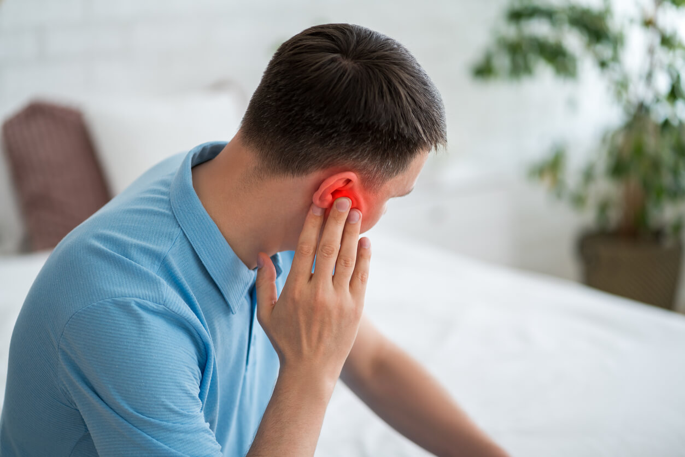

Headphone Ear Pain

Source: https://www.georgetown-ent.com/2025/05/02/earache-vs-ear-infection-what-is-causing-pain-in-my-ear/
Have you ever worn earbuds all day while working or studying, only to take them out and feel a dull ache in your ears? This is becoming increasingly common. Our ears were designed to remain open and clear, catching sound waves from the environment around us. By shoving hard plastic speakers deep into the delicate pathways of our heads, we are exposing our ears to constant friction, poor airflow, and dangerous noise levels that they simply cannot handle over long periods.
Using earbuds can cause ear pain and infections. Earbuds trap heat and moisture inside your ear canal. This creates a perfect place for bacteria to grow, which can lead to itchy or painful infections similar to "swimmer’s ear."
The physical pressure of hard plastic earbuds against the skin can also cause sores. If you wear them for many hours, your ears might feel very tender or sore to the touch. This is because the skin inside your ear is very sensitive and thin.
A bigger danger is hearing loss. Many people listen to music too loudly to block out noise. Loud sounds can permanently damage the tiny hairs inside your ear that help you hear. Once these are damaged, they do not grow back, and your hearing gets worse.
To protect your ears, follow the "60/60 rule." Listen at 60% volume for no more than 60 minutes at a time. Using "over-ear" headphones is also safer because they don't go inside your ear canal and they block outside noise better.
Ear Health Tips:
- Bacteria Growth: Earbuds trap sweat and heat, leading to infections.
- Pressure Sores: Hard earbuds can hurt the sensitive skin of the ear.
- Hearing Loss: Listening to loud music can permanently damage your ears.
- The 60/60 Rule: Keeping volume low and taking breaks to save your hearing.
References
- American Osteopathic Association. (2023). Headphones and hearing loss. https://osteopathic.org/what-is-osteopathic-medicine/headphones-hearing-loss/